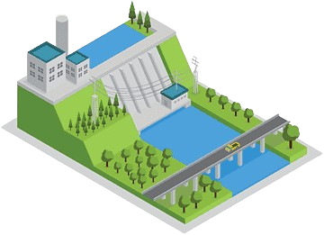
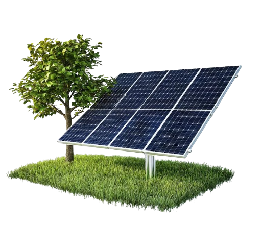
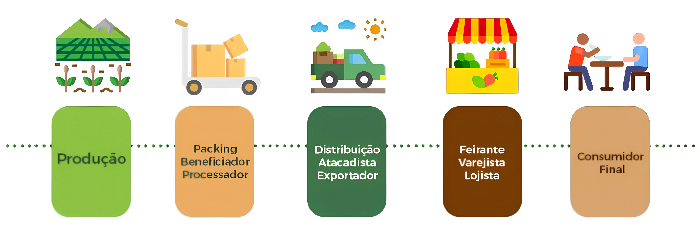
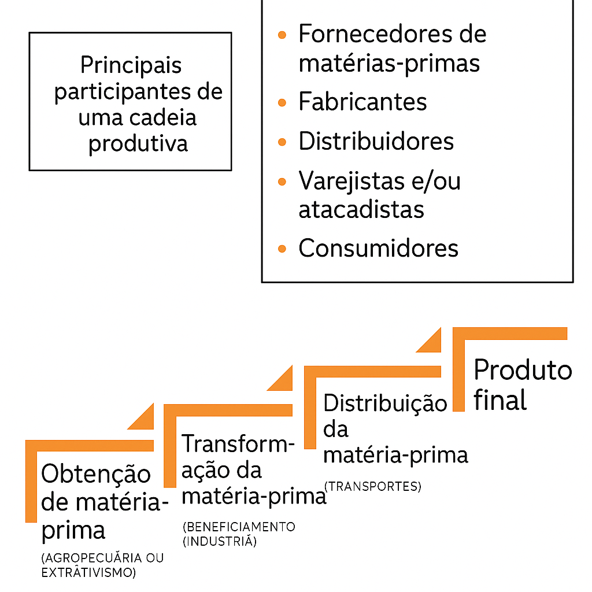
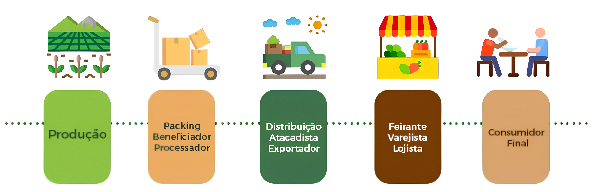
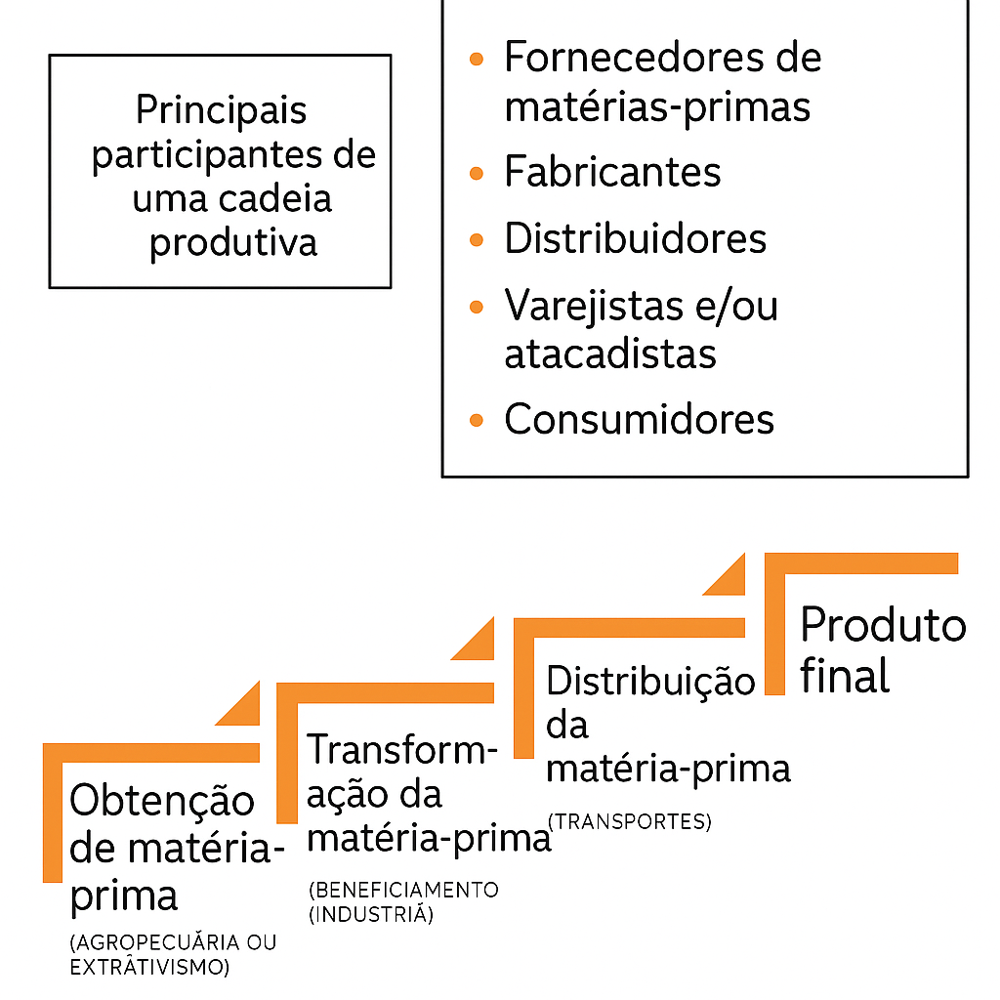

MATRIZES ENERGÉTICAS
A matriz energética é o conjunto de todas as fontes de energia disponíveis e utilizadas por um país para movimentar sua economia e atender às necessidades da população. Em outras palavras, ela representa de onde vem a energia que usamos no nosso dia a dia – seja para acender uma lâmpada, abastecer um carro, produzir bens em uma fábrica ou manter hospitais e escolas funcionando. Cada país possui uma matriz energética própria, baseada em fatores como a disponibilidade de recursos naturais, o nível de desenvolvimento tecnológico, as políticas governamentais e os investimentos realizados no setor de energia. Essa matriz é formada por diversas fontes de energia, que se dividem em dois grupos principais: renováveis e não renováveis.
Importância na Economia do Brasil
A matriz energética exerce um papel central na economia brasileira, sendo determinante para o desenvolvimento socioeconômico do país. Uma matriz energética robusta e diversificada contribui diretamente para o crescimento econômico, pois assegura o fornecimento contínuo de energia às atividades produtivas, estimula a geração de empregos e promove a melhoria da qualidade de vida da população. Além disso, o Brasil se destaca internacionalmente por dispor de uma ampla variedade de recursos naturais renováveis, como as hidrelétricas e a biomassa, o que o coloca em uma posição privilegiada na transição para uma matriz energética mais limpa e sustentável, em sintonia com os compromissos ambientais globais. A disponibilidade de energia a custos mais acessíveis e com alto grau de confiabilidade representa um fator estratégico para a competitividade da indústria nacional, reduzindo os custos operacionais, atraindo investimentos estrangeiros e fortalecendo a posição do Brasil no comércio internacional. Assim, a matriz energética brasileira não apenas sustenta o funcionamento da economia, mas também projeta o Brasil como um agente ativo e responsável no cenário energético global.
Matrizes Energéticas Existentes
HIDRELÉTRICA
Principal fonte no Brasil. Renovável, mas depende da água dos rios. A energia hidrelétrica é aquela que é gerada ao transformar a força da água em energia elétrica. Para aproveitar tal força, são construídas grandes infraestruturas hidráulicas capazes de extrair o máximo potencial desse recurso renovável, livre de emissões e que se origina na própria área.
SOLAR
Energia solar é a energia proveniente do sol, que pode ser utilizada para diversas finalidades, como gerar eletricidade, aquecer água e até mesmo construir casas com maior eficiência energética. É uma fonte de energia renovável e sustentável, com baixo impacto ambiental. Fonte limpa e promissora. Custo de instalação ainda é elevado.
CARVÃO MINERAL
O carvão mineral é uma fonte de energia não renovável, utilizada principalmente para geração de eletricidade, especialmente em termelétricas. Alta emissão de poluentes. No Brasil, representa cerca de 5% da matriz energética e 3% da matriz elétrica, sendo um recurso finito e que pode se esgotar com o passar dos anos.
EÓLICA
A energia eólica é uma forma de energia renovável que aproveita a força do vento para gerar eletricidade. Esta energia é convertida em energia elétrica através de aerogeradores, que são estruturas com hélices que giram com o vento, impulsionando um sistema de geração de energia. Limpa e crescente no Nordeste.

Gráfico Estatístico
O gráfico apresentado mostra a matriz energética do Brasil, ou seja, a participação de cada fonte de energia no total de energia consumida no país. De acordo com os dados, a principal fonte de energia utilizada é o petróleo e seus derivados, que correspondem a 35,7% da matriz energética brasileira. Essa é uma fonte não-renovável e muito utilizada nos transportes e na indústria. Em segundo lugar, destacam-se os derivados da cana-de-açúcar, com 15,4%, uma fonte renovável bastante presente no Brasil, principalmente na produção de etanol. A energia hidráulica aparece logo depois, com 12,5%, sendo uma das principais fontes de eletricidade do país, por meio das hidrelétricas. Outras fontes são o gás natural (10,5%) e a lenha e o carvão vegetal (9,0%). Além disso, há participação de outras fontes renováveis (7,0%), carvão mineral (4,6%), energia eólica e solar (3,5%), energia nuclear (1,3%) e outras fontes não-renováveis (0,6%).
Esses dados mostram que, apesar da presença significativa de fontes renováveis, o Brasil ainda depende em grande parte de fontes não-renováveis, como o petróleo e o gás natural. No entanto, observa-se o crescimento de fontes alternativas e mais sustentáveis, como a solar e a eólica, o que aponta para um possível avanço em direção a uma matriz mais limpa no futuro.
Fontes de Energia no Brasil (%)
Características das Matrizes
No caso do Brasil, a matriz energética apresenta-se como uma das mais renováveis do mundo, com expressiva participação de fontes como a energia hidráulica e a biomassa. Ainda assim, a utilização de combustíveis fósseis permanece significativa, especialmente nos setores de transporte e geração de derivados do petróleo.
As matrizes energéticas são compostas por diversas fontes, podendo incluir tanto recursos renováveis, como solar, eólica, hidráulica e biomassa, quanto não renováveis, como petróleo, carvão, gás natural e energia nuclear. A composição dessas matrizes varia conforme os recursos disponíveis e as prioridades de cada país. Enquanto o Brasil se destaca por sua forte presença de fontes renováveis, outros países ainda mantêm grande dependência de combustíveis fósseis. Apesar do crescimento das energias limpas, o petróleo e o carvão continuam sendo amplamente utilizados, especialmente em nações desenvolvidas. Nesse contexto, a eficiência energética torna-se essencial, promovendo o uso racional da energia e contribuindo para a redução dos impactos ambientais. A matriz energética brasileira é notável pela predominância de fontes renováveis, principalmente a energia hidráulica e a biomassa, embora os combustíveis fósseis ainda desempenhem papel importante. Já a matriz elétrica do país apresenta-se como ainda mais limpa, com destaque para a geração hidroelétrica.Exportações e Importações
O Brasil possui uma matriz energética diversificada, com forte presença de fontes renováveis. No entanto, o país ainda realiza importações significativas de combustíveis fósseis, como o gás natural e derivados de petróleo, especialmente para suprir demandas específicas do setor de transportes e da indústria. Ao mesmo tempo, o Brasil é exportador de petróleo bruto, etanol e energia elétrica em determinadas regiões de fronteira, como para a Argentina e o Paraguai (no caso da Usina de Itaipu). Essa relação entre exportações e importações reflete tanto os avanços quanto os desafios na autossuficiência energética brasileira.
Cadeia Produtiva da Energia no Brasil
A cadeia produtiva da energia no Brasil é composta por várias etapas: exploração, produção, transformação, distribuição e consumo final. No setor de petróleo, por exemplo, essa cadeia inclui desde a extração em campos terrestres ou marítimos (como o pré-sal), o refino nas refinarias nacionais, até a distribuição para os postos de combustíveis. No caso das fontes renováveis, como a biomassa e a energia hidráulica, há também uma complexa rede produtiva, que envolve desde a produção agrícola (como a cana-de-açúcar para o etanol), a geração de energia nas usinas e a transmissão até os centros consumidores.
Narrativa: O Que são Matrizes Energéticas?
Elaborado por: Maria Eduarda de Andrade.
Realização: Maria Eduarda de Andrade e Ana Lívia Domingas.
Soluções Sustentáveis
Energia
Promover o uso de fontes renováveis, como solar, eólica, hidráulica e biomassa, é essencial para reduzir os
impactos ambientais da geração de energia e diminuir a dependência de combustíveis fósseis, mais poluentes e
finitos.
Eficiência Energética
Trata-se de utilizar a energia de forma mais racional, com equipamentos e sistemas modernos que consomem
menos, resultando em economia e menor impacto ambiental.
Mobilidade Sustentável
Visa reduzir a poluição e o trânsito urbano por meio do uso de veículos elétricos, transporte público
eficiente e o incentivo ao uso de bicicletas e formas alternativas de locomoção.
Gestão de Resíduos
Inclui ações como reciclagem, compostagem e reaproveitamento de materiais, com o objetivo de diminuir a
quantidade de lixo nos aterros e preservar os recursos naturais.
Preservação Ambiental
Envolve a proteção de florestas, rios e biodiversidade, além de práticas como o reflorestamento e o combate
ao desmatamento, para garantir o equilíbrio dos ecossistemas.
CADEIA PRODUTIVA

A cadeia produtiva é o conjunto de processos e etapas interligadas que envolvem a produção de um bem ou
serviço, desde a extração ou produção da matéria-prima até a entrega do produto final ao consumidor. Cada
etapa dessa cadeia contribui para agregar valor ao produto, envolvendo diferentes setores da economia, como a
agricultura, a indústria, os serviços de transporte, a comercialização e o consumo final.

A cadeia produtiva é o conjunto de etapas que envolvem a produção de um bem, desde a obtenção da matéria-prima
até a chegada do produto final ao consumidor. Ela envolve diversos participantes e processos organizados de
forma sequencial.
Entre os principais participantes de uma cadeia produtiva, estão: fornecedores de matérias-primas, fabricantes,
distribuidores, varejistas e/ou atacadistas e os consumidores.
As Etapas da Cadeia Produtiva Incluem:
- Obtenção de matéria-prima: é a fase inicial, onde se extraem os recursos naturais por meio da agropecuária
ou do extrativismo.
- Transformação da matéria-prima: ocorre o beneficiamento ou industrialização, onde a matéria-prima é
transformada em produtos ou componentes.
- Distribuição da matéria-prima: envolve o transporte e a logística necessária para levar os produtos até os
pontos de venda.
- Produto final: é o resultado de todas as etapas anteriores, pronto para ser consumido pelo público.
A cadeia produtiva é extremamente importante porque organiza de forma estruturada todas as etapas envolvidas na produção de bens, desde a obtenção da matéria-prima até a entrega do produto final ao consumidor. Essa organização facilita o planejamento, a especialização do trabalho e o controle da qualidade em cada fase. Além disso, gera empregos em diversos setores como agricultura, indústria, transporte e comércio. Outro ponto relevante é a agregação de valor: ao transformar matérias-primas em produtos acabados, aumenta-se seu valor econômico.
Referências Utilizadas
- Empresa de Pesquisa Energética (EPE)
- Agência Nacional de Energia Elétrica (ANEEL)
- Ministério de Minas e Energia (MME)
- Agência Nacional do Petróleo, Gás Natural e
Biocombustíveis (ANP)
- Instituto Brasileiro de Geografia e Estatística
(IBGE)
- FGV Energia
- Agência Internacional de Energia (IEA)
- Plataforma Brasil 2050 - Sustentabilidade e
Energia
Soluções Sustentáveis
Energia
Promover o uso de fontes renováveis, como solar, eólica, hidráulica e biomassa, é essencial para reduzir os impactos ambientais da geração de energia e diminuir a dependência de combustíveis fósseis, mais poluentes e finitos.
Eficiência Energética
Trata-se de utilizar a energia de forma mais racional, com equipamentos e sistemas modernos que consomem menos, resultando em economia e menor impacto ambiental.
Mobilidade Sustentável
Visa reduzir a poluição e o trânsito urbano por meio do uso de veículos elétricos, transporte público eficiente e o incentivo ao uso de bicicletas e formas alternativas de locomoção.
Gestão de Resíduos
Inclui ações como reciclagem, compostagem e reaproveitamento de materiais, com o objetivo de diminuir a quantidade de lixo nos aterros e preservar os recursos naturais.
Preservação Ambiental
Envolve a proteção de florestas, rios e biodiversidade, além de práticas como o reflorestamento e o combate ao desmatamento, para garantir o equilíbrio dos ecossistemas.
CADEIA PRODUTIVA
A cadeia produtiva é o conjunto de processos e etapas interligadas que envolvem a produção de um bem ou serviço, desde a extração ou produção da matéria-prima até a entrega do produto final ao consumidor. Cada etapa dessa cadeia contribui para agregar valor ao produto, envolvendo diferentes setores da economia, como a agricultura, a indústria, os serviços de transporte, a comercialização e o consumo final.

A cadeia produtiva é o conjunto de etapas que envolvem a produção de um bem, desde a obtenção da matéria-prima até a chegada do produto final ao consumidor. Ela envolve diversos participantes e processos organizados de forma sequencial. Entre os principais participantes de uma cadeia produtiva, estão: fornecedores de matérias-primas, fabricantes, distribuidores, varejistas e/ou atacadistas e os consumidores.
As Etapas da Cadeia Produtiva Incluem:
- Obtenção de matéria-prima: é a fase inicial, onde se extraem os recursos naturais por meio da agropecuária ou do extrativismo.
- Transformação da matéria-prima: ocorre o beneficiamento ou industrialização, onde a matéria-prima é transformada em produtos ou componentes.
- Distribuição da matéria-prima: envolve o transporte e a logística necessária para levar os produtos até os pontos de venda.
- Produto final: é o resultado de todas as etapas anteriores, pronto para ser consumido pelo público.
A cadeia produtiva é extremamente importante porque organiza de forma estruturada todas as etapas envolvidas na produção de bens, desde a obtenção da matéria-prima até a entrega do produto final ao consumidor. Essa organização facilita o planejamento, a especialização do trabalho e o controle da qualidade em cada fase. Além disso, gera empregos em diversos setores como agricultura, indústria, transporte e comércio. Outro ponto relevante é a agregação de valor: ao transformar matérias-primas em produtos acabados, aumenta-se seu valor econômico.
Referências Utilizadas
- Empresa de Pesquisa Energética (EPE)
- Agência Nacional de Energia Elétrica (ANEEL)
- Ministério de Minas e Energia (MME)
- Agência Nacional do Petróleo, Gás Natural e Biocombustíveis (ANP)
- Instituto Brasileiro de Geografia e Estatística (IBGE)
- FGV Energia
- Agência Internacional de Energia (IEA)
- Plataforma Brasil 2050 - Sustentabilidade e Energia